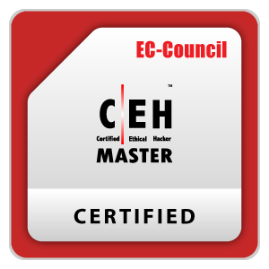
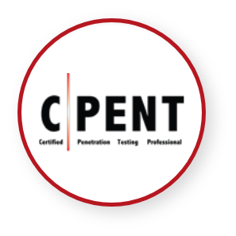
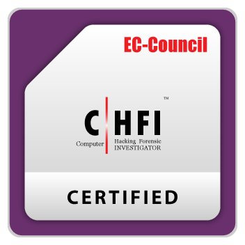
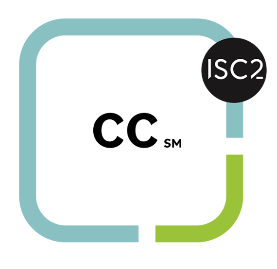

Web Application Security Practitioner
12 weeks, one-to-one, until you can test a real application.
By week 12 you can test a web application end to end against the OWASP Top 10 and common API flaws, and write a report a security team would accept. You leave with three graded lab reports, a competency record and a verifiable certificate. Evidence, not a promise.
Next intake: October 2026. A handful of seats — every hour is taught by me, so it stays small.
Fit
Who this is for
Worth being direct before either of us spends time on an application.
This is for you if
- You've finished a degree, a certification or a course, and applications aren't turning into interviews.
- You're in IT and want to move into security with proof you can do the work, not another certificate.
- You're early in a security role and want to get properly good at web and API testing.
This is not for you if
- You want a batch. Every hour here is one-to-one.
- You want a recording library. There is work between sessions, and I read it.
- You want someone to promise you a job. I don't, and nobody honest can.
Need something shaped around you rather than a fixed 12 weeks? The bespoke 1:1 mentorship is planned from your intake instead.
Outcomes
What you'll be able to do
Each of these is demonstrated on a live lab and graded, not ticked off a syllabus.
- Scope and run a web application assessment with a repeatable methodology.
- Find and demonstrate the OWASP Top 10 classes in real targets — injection, broken access control, authentication flaws, SSRF and the rest — not just name them.
- Test APIs: authentication, authorisation, mass assignment, rate limits, business-logic abuse.
- Write findings the way a client or a hiring manager reads them: impact, reproduction, fix.
- Talk about your work in an interview with specifics, because you did it.
Structure
How the 12 weeks run
Every week: one live 1:1 session, assignments and labs reviewed, questions answered within a day.
Weeks 1–3
Foundations and method. Pentest fundamentals, the toolchain, how a professional assessment is scoped and documented. First lab.
Weeks 4–8
OWASP Top 10, hands-on. One or two vulnerability classes a week, each on a live lab, each ending in a written finding I review.
Weeks 9–11
API security. Authentication and authorisation flaws, object-level access, mass assignment, rate limiting, logic abuse.
Week 12
Full assessment. You test an application start to finish and deliver a complete report. We review it together, line by line.
Everything is tracked in your own portal — sessions, hours, labs, competencies, certificate.
Proof
What you leave with
Things you can hand to an employer, not a feeling of having covered the material.
- Three graded lab reports you can show an employer.
- A competency record — what you demonstrated, at what level, with evidence.
- A verifiable certificate of completion.
- A written next-steps plan for the role you're targeting.
Who's teaching
Every hour, with me
Mentorship is a small part of my week. The rest is the work I would be teaching you to do.
- Sarath G. Application security consultant and international cybersecurity trainer, 9+ years in penetration testing and security training.
- Web and API assessments, thick-client pentesting and secure-coding enablement for central banks, government bodies, healthcare and Fortune 500 teams, on-site across 10+ countries.
- A small number of 1:1 students at any time, alongside that work. Lab work runs on ShopEasy and my public labs, free whether or not you enrol.
- Full profile: clients, engagements and published labs →
Certifications held




Price
One price, stated up front
Includes all sessions, reviews, labs, the portal and the certificate.
- Booked a paid session with me in the last 30 days? It's credited against your first payment, up to ₹999.
- 15-day cooling-off: ask within 15 days of your first payment and the unused portion is refunded, no reason needed.
- 48-hour cancellation rule for individual sessions; with less notice the session counts as delivered.
- The full terms are public: enrolment agreement and refund policy.
How to start
Two doors, one room
Apply directly, or let a 30-minute readiness check decide it for you.
Apply
Five questions, two minutes. I read every application myself and reply within two working days.
Or check first
A Job Readiness Check — 30 minutes, ₹499. You send your resume and target role; you leave with your 3–5 gaps in writing. Join the programme within 7 days and the ₹499 comes off your first payment.
Enrol
You get a private sign-up link, your portal and your schedule.
Questions
Questions people ask
Including the one everyone wants answered before anything else.
Do I need prior security experience?
No. Weeks 1–3 exist for that. You need basic comfort with a terminal and a browser, and 4–6 hours a week outside sessions.
Is this a job guarantee?
No. Nobody honest can offer one. What I guarantee is that you'll have done the work and can prove it.
Why one-to-one instead of a batch?
Because a batch teaches the syllabus; one-to-one teaches you. Your gaps set the plan.
What if I miss a week?
Sessions reschedule with 48 hours' notice. The plan flexes; the outcome doesn't.
Can I pay monthly?
Yes — 3 × ₹13,000. Paying upfront saves ₹3,000.
What tools do I need?
A laptop that can run a VM and a browser. Everything else is free or provided.
Evidence, not a promise.
Twelve weeks from now you either can test a real application or you can't. This is built so that you can, and so that you can show it.
Not sure which door? The readiness check costs ₹499 and it comes off your first payment if you enrol within 7 days.